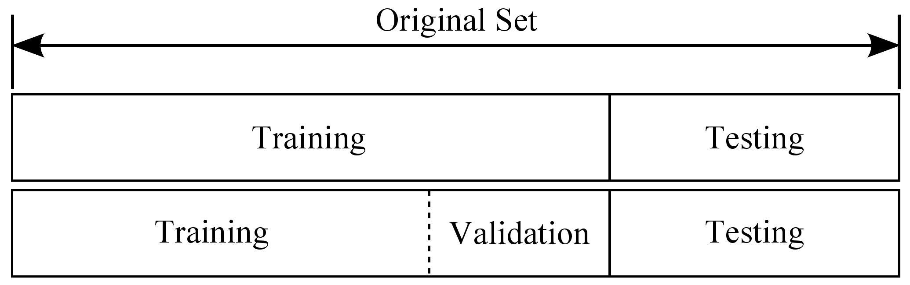
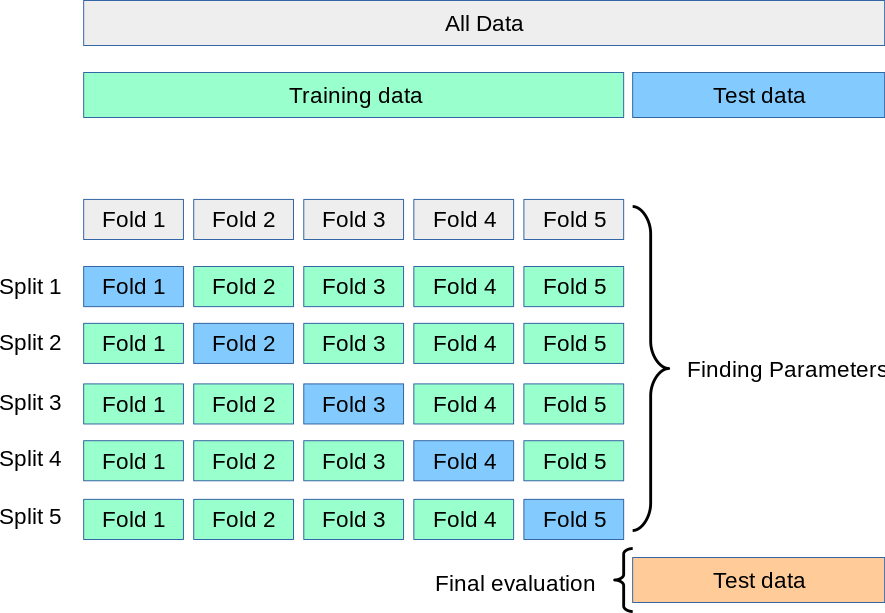

数据集分割与验证
分割数据集
在实践中，我们通常不会将所有数据点都用于训练模型，而根据模型训练的不同阶段，将数据集划分为训练集（training set，）、验证集（validation set，，也称开发集，dev set）和测试集（testing set，）。

训练集用于训练模型，验证集通常用于查看新数据的状态和用于调整模型的超参数，测试集用于评估模型的性能。在划分数据集时，我们通常会将数据集的大部分数据用于训练集，只有一小部分数据用于验证集与测试集。
常见的划分比例是 70% 的数据用于训练集，10% 的数据集用于验证集，20% 的数据用于测试集。
需要注意的是，我们在划分数据集时，需要保证各个集合之间没有交集。
通过集合语言，因此我们有：
用更形象的例子来解释不同数据集的作用的话，我们可以看作训练集是课本，验证集是模拟考试，测试集是真正的考试。我们通过课本（训练集）学习知识，通过模拟考试（验证集）查看自己的学习状态，通过真正的考试（测试集）来评估自己的学习成果。
留出法 Holdout
留出法是最简单的数据集划分方法，即最开始将数据集划分为训练集 和测试集 。然后从训练集中随机选择取出数据以创建验证集 。
交叉验证 Cross Validation
在实际中，我们可能会遇到数据集较小的情况，此时我们可以使用交叉验证（Cross Validation）来更好的评估模型的性能。

[https://scikit-learn.org/stable/modules/cross_validation.html]
交叉验证是一种通过多次划分数据集来评估模型性能的方法。常见的交叉验证方法有：
- K 折交叉验证（K-Fold Cross Validation，KFCV）
- 留一法（Leave-One-Out Cross Validation，LOOCV）
K 折交叉验证 K-Fold Cross Validation
K 折交叉验证是将训练集 划分为 个大小相同的子集，将其中一个单独的子集保留族谱为验证模型的数据，其他 个子集用于训练。交叉验证重复 次，每个子集验证一次，最后取 次的验证结果的平均值作为最终的验证结果。
通常来说，我们会将数据集随机打乱（shuffle）后再进行 K 折交叉验证。且 通常取 5 或 10。
留一法 Leave-One-Out Cross Validation
留一法是 K 折交叉验证的特例，即 ，其中 是训练集 的大小。留一法的缺点是计算量大，但是由于每次只有一个样本作为验证集，因此留一法的结果是最准确的。